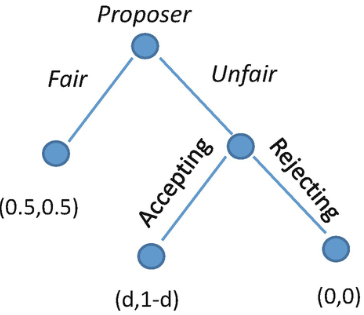

Skew in psycology
Due to several psychological insights like the famous stanford prison experiment, where peers were given the roles of guards and inmates in a fictional prison and the guards mistreated the inmates, scientists have come to the conclusion that people have an inherent selfishness, an evil that is coded into our DNA. But this is not true.
In another experiment called the Ultimatum Game, there are 2 subjects, Subject A is given an amount of money, say $100, and has to offer Subject B a percentage, if Subject B refuses, Subject A and B do not recieve any money. The result of the experiment was that most people agreed on 40% to 50%, and above, wanting a fair cut of the sum, Scientists thought this pointed to an innate need for fairness and respect in human psycology. However, when a researcher expanded the experiment to rural locations like a remote region in the Peruvian Amazon, the results varried significantly, being essentially the oposite of the studies done in the US. These subjects accepted the deal no matter what percentage was, it poked a hole in the "human nature" the scientists thought previously. In fact, when done in more remote places